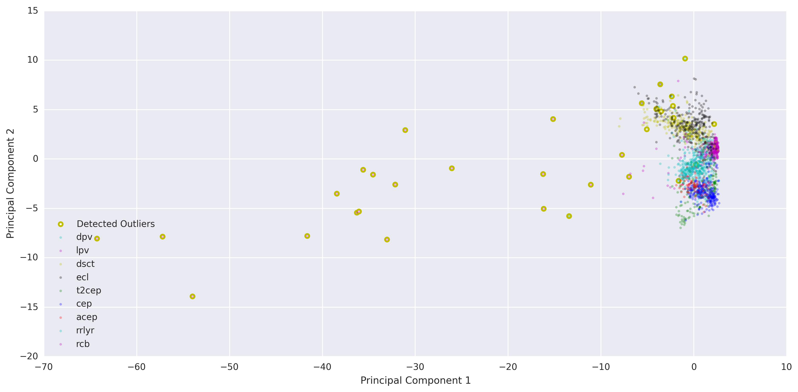
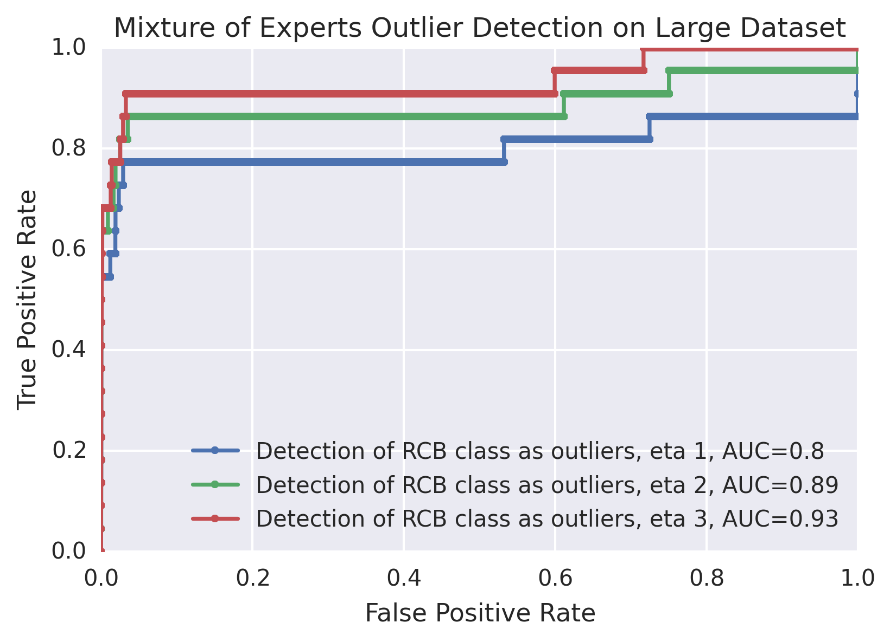
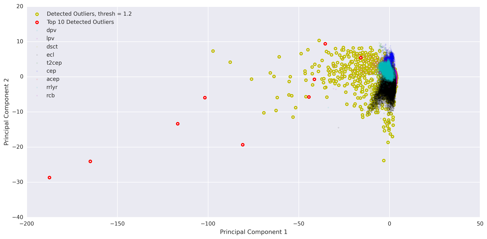
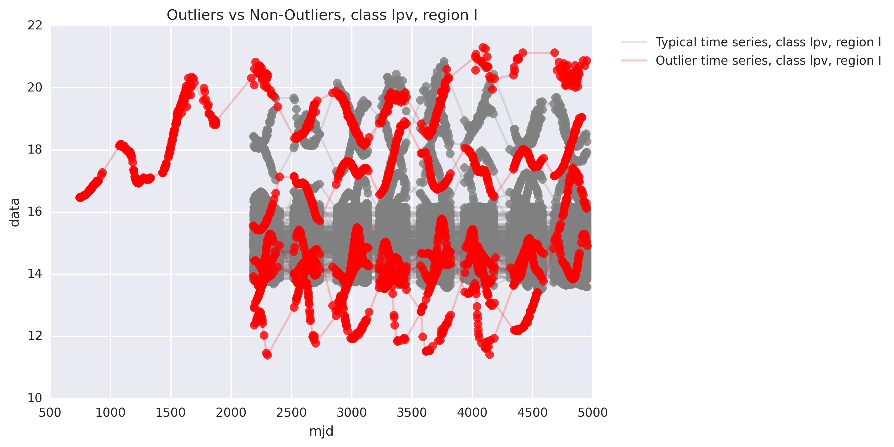
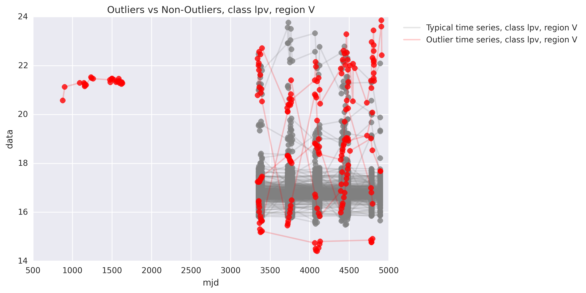
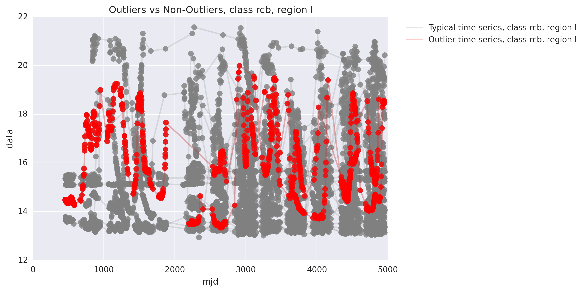
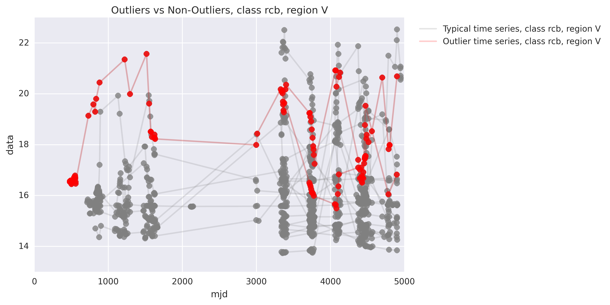
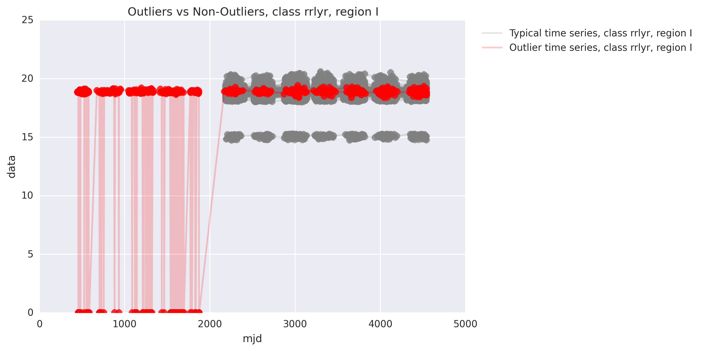
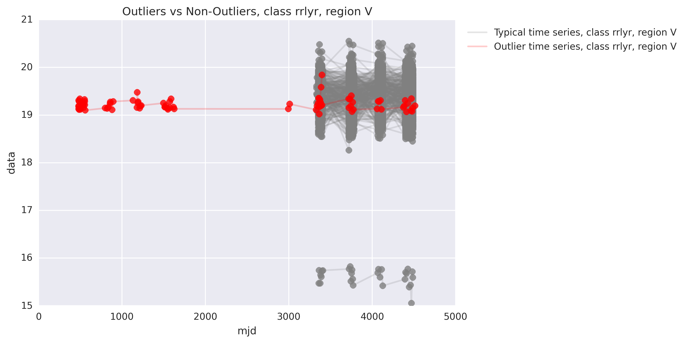

Mixture of Experts & Results
Introduction to the Mixture of Experts
With the mixture of experts approach, we assume that each outlier detection method performs best within a particular domain of the sample space. In this ensemble method, we combine the results from each method in a smart way so that the diversity of experts can make up for deficiencies in individual methods over particular domains. Therefore, the result of each expert is weighted by values generated based on the location of the point in the 57-dimensional space. The gating parameter $\eta_i$ for each expert $i$ must be trained.
In this project, six outlier detection methods (see Methods section) were used on either the infrared (I) or visual (V) channels of the light curves. This gave a total of twelve experts (six methods on two different channels). Here, we describe each outlier detection method and show its stand-alone performance.
Figure R1. Mixture of Experts. The result of each expert is weighted by values generated from a gating network. Both the gating network and the experts must be trained.
The gating probability $g_i^x$ is the weight assigned to each expert $i$ for data point $\vec{x}$. The weights are generated using a soft-max gating network: $$g_i^x= \frac{exp(\vec{\eta_i}^T \vec{x})}{\sum_{j=1}^k exp(\vec{\eta_j}^T \vec{x}) },$$ where $\vec{x}$ is a 57-dimensional data vector (one data point), and $\eta_i$ is the gating parameter for each expert $i$, with a total of $k$ experts. Thus, the outlierliness score $P_x$ for a particular data point $\vec{x}$ is: $$P_x = \sum_{i=1}^k g_i(\vec{\eta_j},\vec{x}) p_i(\vec{x}),$$ where $p_i(\vec{x})$ is the outlierliness score assigned to a particular data point $\vec{x}$ by expert/model $i$.
Results
A mixture of experts model was trained on the data set of 1913 objects, optimizing for the detection of the artificial and the rcb group outliers. The optimization was done using simulated annealing over the entire range of possible $\eta$ values.

Figure R2. ROC for the combined mixture of experts outlier detection method. The combined model is able to perform just as well as the best individual expert in the detection of artificial outliers. It performs comparably to the best individual expert in the detection of rcb class outliers.
As shown above, the mixture of experts ensemble method is able to perform as well as the best individual outlier detection method for the artificial outliers. For the rcb class outliers, it does similarly to the top individual outlier detection methods. We cannot a priori expect the mixture to perform better than all the individual experts for both types of outlier detection (artificial and rcb) because we optimized both the rcb and the artificial outlier detection. The simultaneous optimization of two responses may have lead to compromises in the absolute performance for each specific outlier class.
Table R1 shows the performance as measured by area under the ROC curve (AUC) for each expert along with the performance of the mixture of experts. Again, since the mixture of experts is optimized for both artificial and rcb class outliers, it seems intuitive that the performance of detecting any one type of outlier may may not be as high as that for individual experts. However, it makes sense that the average AUC for the mixture of experts is highest. The mixture method still seems to be able to maintain high performance for the artificial outlier detection.
| Method | Artificial Outliers AUC | RCB Outliers AUC | Average AUC |
|---|---|---|---|
| KNN 1 I-channel | 0.85 | 0.94 | 0.90 |
| KNN 1 V-channel | 0.42 | 0.88 | 0.65 |
| KNN 2 I-channel | 0.50 | 0.95 | 0.73 |
| KNN 2 V-channel | 0.50 | 0.68 | 0.59 |
| SVM+JP I-channel | 0.78 | 0.91 | 0.85 |
| SVM+JP V-channel | 0.62 | 0.73 | 0.68 |
| LOCI I-channel | 0.30 | 0.28 | 0.29 |
| LOCI V-channel | 0.28 | 0.45 | 0.37 |
| Hyperplane I-channel | 0.78 | 0.78 | 0.78 |
| Hyperplane V-channel | 0.99 | 0.82 | 0.91 |
| Mixture of Experts | 0.99 | 0.89 | 0.94 |
Table R1. Area under the ROC curve (AUC) for various outlier detection methods. The AUC is a common single-number metric to compare between ROC curves (such as those seen in the Methods section). Bolded AUC values are from the individual outlier detection methods that did the best under each outlier detection task (either detecting artificial outliers or the rcb class as outliers).
To visualize the 57-dimension data points more easily, principal component analysis (PCA) was done on the extracted time series features for each light curve. The first two principal components were used to make a 2D plot (Figure D1). PCA was used because visualizing a 57-dimensional space on a 2D image is very difficult. One could imagine plotting the data points on axes of each pair of features. However, this would create too many (57 choose 2) plots and therefore would be hard to easily grasp the shape of the data point cloud. PCA is a great way to draw a plane through the 57-dimensional data point cloud in such a way that the plane captures the most variation in the data. Projecting the data points on this place thus may allow visualization of outlier points more easily. We note that PCA was solely used as a visualization tool, and was not used for any of the mathematical mechanics in building the outlier detection models.
{kind=link}
Figure R3. Data points and detected outliers on the PCA plane (I-channel). Detected outliers are outlied in yellow. The threshold 1.1 was chosen by eye such that the obvious outliers were identified, allowing only about 1% false positive rate. The false positive rate at this threshold is 1% (231 non-rcb objects) and the true postive rate is 68% (18/22 rcb objects).
As can be seen in Figure R3, the mixture of experts model is able to identify almost all of the objects in class rcb that appear to be far away from the other points on the PCA plane. With an arbitrary threshold (1.1) the false positive rate is 1% (231 non-rcb objects) and the true postive rate is 68% (18/22 rcb objects). Of course, depending on one's tolerance for type 1 or type 2 error, the threshold can be adjusted.
Application to Larger Data Set
We used the mixture of experts model trained with the 1913 outliers to detect outliers in the larger data set of 49006 objects (a total of 98012 light curves accounting for I and V channel): 136 from dpv, 14883 from lpv, 1252 from dsct, 15377 from ecl, 202 from t2cep, 2139 from cep, 82 from acep, 14913 from rrlyr, 22 from rcb. This set includes the training set. Note that the number of rcb class outliers is the same as the training set, so this exercise will show the performance of the mixture model in identifying the rcb class while dealing with more data. There is also an additional dpv class. The ROC curve displaying the results are shown in figure R4.
To test the robustness of the model, the mixture of experts model parameter $\eta$ was additionally trained with two different small samples of 2000. Thus, to summarize, $\eta 1$ is was trained on the set of 1913 objects described above. $\eta 2$ and $\eta 3$ were trained on 2000 randomly selected objects. Since the rcb class outliers were used to help train the model, we always include the 22 rcb objects, but the other 1978 objects were randomly chosen from our larger data set of 49006 objects (excluding the rcb objects). That is, each object in the 49006 data set had equal probability of being selected (if they were not rcb, as rcb objects automatically get selected) and we only selected 1978 of them. These are just bootstraped data points, so we did not have to define any range in sample space. For $\eta 2$, the distribution of the 2000 points used to train the mixture of expert parameter $\eta$ were: 6 from dpv, 576 from lpv, 65 from dsct, 656 from ecl, 6 from t2cep, 77 from cep, 3 from acep, 589 from rrlyr, 22 from rcb. For $\eta 3$, the distribution of the 2000 points used to train the mixture of expert parameter $\eta$ were: 5 from dpv, 605 from lpv, 46 from dsct, 610 from ecl, 10 from t2cep, 85 from cep, 3 from acep, 614 from rrlyr, 22 from rcb. Note that the distribution of points from each class are different between the three mixture of experts training sets.
{kind=link}
Figure R4. ROC for the mixture of experts outlier detection method applied to larger dataset of 49006 objects. The mixture of experts model trained on the smaller data set does well in this scenario in identifying the rcb class as outliers. The three lines show the results from three mixture of experts models (3 different $\eta$ parameters) that were trained on different small sample sizes.
As Figure R4 shows, the mixture of experts model is readily applicable to larger data sets. It does fairly well in the detection of rcb class outliers. It is robust to different small training sets, even with a different distribution of data points.
{kind=link}
Figure R5. Large data set with detected outliers plotted on the PCA plane (I-channel). Outliers detected by the mixture of experts model with parameter $\eta 3$ are outlied in yellow. The top 10 outliers detected by the mixture of experts model with parameter $\eta 3$ are outlied in red. The threshold 1.2 was chosen such that the false positive rate (as defined in the rcb class outlier detection context) was around 1%. The false positive rate at this threshold is 1% (505 non-rcb class objects) and the true postive rate is 36.4% (8/22 rcb class objects).
As can be seen in Figure R5, the mixture of experts model is able to identify almost all of the objects that appear to be far away from the other points on the PCA plane, even though most of them are not in the class rcb. This suggests that our current ROC curve (which measures effectiveness in identifying rcb class outliers) may not be the best metric to evalate these models. It also shows that this outlier detection method is very applicable to larger data sets in identifying outliers in classes that we didn't even train with.
The top ten outliers identified were the following: 2 from the class RRLYR, 2 from the class RCB, and 6 from the class LPV. In the following figures, we plot the outlier timeseries (in red) and we plot the rest of the timeseries in its class (in gray).
 {kind=link}
{kind=link}
Figure R6. Outlier and typical lightcurve timeseries from class LPV. Timeseries belonging to objects identified as part of the top ten outliers are colored in red. Other timeseries that are in the same class are colored in gray. It seems obvious that the red timeseries are different from the others. Some of them have lower magnitude, while some are longer. Note that objects are flagged as outlier using information from both the I and the V channels combined. Thus, while some red timeseries may not appear to be outlier, outlierliness in the combination of that object's I and V channels may have caused the object to be marked as outlier.
 {kind=link}
{kind=link}
Figure R7. Outlier and typical lightcurve timeseries from class RCB. Timeseries belonging to objects identified as part of the top ten outliers are colored in red. Other timeseries that are in the same class are colored in gray. Note that objects are flagged as outlier using information from both the I and the V channels combined. Thus, while some red timeseries may not appear to be outlier, outlierliness in the combination of that object's I and V channels may have caused the object to be marked as outlier.
 {kind=link}
{kind=link}
Figure R8. Outlier and typical lightcurve timeseries from class RRLYR. Timeseries belonging to objects identified as part of the top ten outliers are colored in red. Other timeseries that are in the same class are colored in gray. It seems obvious that the red timeseries are different from the others, just due to length. Note that objects are flagged as outlier using information from both the I and the V channels combined. Thus, while some red timeseries may not appear to be outlier, outlierliness in the combination of that object's I and V channels may have caused the object to be marked as outlier.
Next Steps
Future work should focus on the addition of more outlier detection "experts" to the model. In addition, the optimization of the gating parmeter $\eta$ in mixture of experts model may be optimized simultaneously with individual expert parameters using expectation maximization and stochastic gradient descent. In addition, we look to use our easily extensible code to extend our work to other domains - in particular, fraud detection in financial transaction networks.